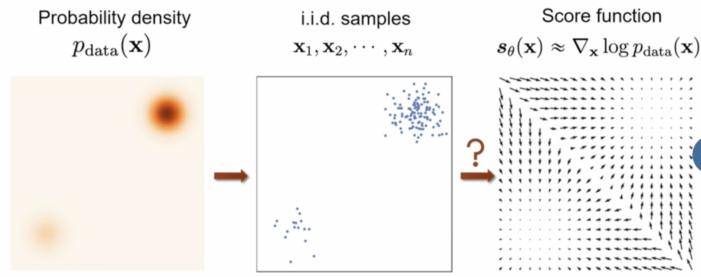

Score Based Models
Score Matching
Energy-Based Model Probability Distribution
In Energy-Based Models, the probability distribution is defined as:
where:
-
\(f_\theta(x)\) is the energy function (neural network)
-
\(Z(\theta) = \int e^{f_\theta(x)} dx\) is the partition function (intractable)
Taking the logarithm of the probability distribution:
Notice that the partition function \(Z(\theta)\) appears as a constant term that doesn't depend on \(x\).
Stein Score Function
The Stein score function \(s_\theta(x)\) is defined as the gradient of the log probability with respect to \(x\):
For Energy-Based Models, the score function equals the gradient of the energy function:
The partition function term \(\log Z(\theta)\) disappears because it doesn't depend on \(x\).
Score as a Vector Field
The score function \(s_\theta(x)\) is a vector field that assigns a vector to each point \(x\) in the data space. This vector has both:
-
Magnitude: How quickly the log probability changes
-
Direction: The direction of steepest increase in log probability
Intuition: The score vector points "uphill" in the log probability landscape, indicating the direction where the model assigns higher probability.
Example: Gaussian Distribution
Consider a Gaussian distribution with mean \(\mu\) and covariance \(\Sigma\):
Log Probability:
Score Function:
Interpretation:
-
The score points toward the mean \(\mu\) (direction of higher probability)
-
The magnitude is proportional to the distance from the mean
-
For isotropic Gaussian (\(\Sigma = \sigma^2 I\)): \(s(x) = -\frac{1}{\sigma^2}(x - \mu)\)
This example shows how the score function naturally guides samples toward high-probability regions of the distribution.
Score Matching: Comparing Distributions via Vector Fields
The core idea of score matching is that we want to compare two probability distributions by comparing their respective vector fields of gradients (score functions).
The Key Insight:
Instead of directly comparing probability densities \(p_{data}(x)\) and \(p_\theta(x)\) (which requires computing the intractable partition function), we compare their score functions:
- Data Score: \(s_{data}(x) = \nabla_x \log p_{data}(x)\)
- Model Score: \(s_\theta(x) = \nabla_x \log p_\theta(x) = \nabla_x f_\theta(x)\)
This measures how different the "pointing directions" are at each location \(x\).
L2 Distance Between Score Functions
One way to compare the score functions is to calculate the average L2 distance between the score of \(p_{data}\) and \(p_\theta\):
Note: This loss function is also called the Fisher divergence between \(p_{data}(x)\) and \(p_\theta(x)\). The Fisher divergence measures the difference between two probability distributions by comparing their score functions (gradients of log densities) rather than the densities themselves.
Understanding the L2 Distance:
The L2 norm \(\|s_\theta(x) - s_{data}(x)\|^2\) measures the squared Euclidean distance between two vectors:
where \(d\) is the dimension of the data space.
Score matching is a method for training Energy-Based Models by minimizing the Fisher divergence between the data distribution \(p_{data}(x)\) and the model distribution \(p_\theta(x)\):
where \(s_\theta(x) = \nabla_x \log p_\theta(x)\) and \(s_{data}(x) = \nabla_x \log p_{data}(x)\) are the score functions of the model and data distributions respectively.
But how do we figure out \(\nabla_x \log p_{data}(x)\) given only samples?
Score Matching Reformulation (Univariate Case)
For the univariate case where \(x \in \mathbb{R}\), we can rewrite the score matching objective to avoid needing the data score. Let's expand the squared difference:
Expanding the square:
The key insight is to use integration by parts on the cross term. For any function \(f(x)\) and \(g(x)\):
Setting \(f(x) = \frac{d}{dx} \log p_\theta(x)\) and \(g(x) = p_{data}(x)\), we get:
Using the chain rule: \(\frac{d}{dx} \log p_{data}(x) \cdot p_{data}(x) = \frac{d}{dx} p_{data}(x)\), we get:
Using integration by parts:
Why does the boundary term vanish?
The boundary term \(\left. \frac{d}{dx} \log p_\theta(x) \cdot p_{data}(x) \right|_{-\infty}^{\infty}\) vanishes under reasonable assumptions:
- Data distribution decay: \(p_{data}(x) \to 0\) as \(|x| \to \infty\) (most real-world distributions have finite support or decay to zero)
- Model score boundedness: \(\frac{d}{dx} \log p_\theta(x)\) grows at most polynomially as \(|x| \to \infty\)
- Product decay: The product \(\frac{d}{dx} \log p_\theta(x) \cdot p_{data}(x) \to 0\) as \(|x| \to \infty\)
This is a standard assumption in score matching literature and holds for most practical distributions.
Assuming the boundary term vanishes (which is reasonable for well-behaved distributions), we get:
Substituting back into the original objective:
where the constant term \(\frac{1}{2} \mathbb{E}_{x \sim p_{data}} \left[ \left(\frac{d}{dx} \log p_{data}(x)\right)^2 \right]\) doesn't depend on \(\theta\) and can be ignored during optimization.
Key Insight: This reformulation allows us to train the model using only samples from \(p_{data}(x)\) and the derivatives of our model's log probability, without needing access to the data score function.
Score Matching Reformulation (Multivariate Case)
For the multivariate case where \(x \in \mathbb{R}^d\), we can extend the univariate derivation. The score matching objective becomes:
Expanding the squared norm:
The key insight is to use integration by parts on the cross term. For the multivariate case, we need to handle each component separately. Let \(s_\theta(x)_i\) and \(s_{data}(x)_i\) denote the \(i\)-th component of the respective score functions.
For each component \(i\), we have:
Using the chain rule: \(s_{data}(x)_i \cdot p_{data}(x) = \frac{\partial}{\partial x_i} p_{data}(x)\), we get:
Using integration by parts (assuming boundary terms vanish):
Why do the boundary terms vanish in the multivariate case?
For each component \(i\), the boundary term is:
This vanishes under similar assumptions as the univariate case:
- Data distribution decay: \(p_{data}(x) \to 0\) as \(\|x\| \to \infty\) in any direction
- Model score boundedness: Each component \(s_\theta(x)_i\) grows at most polynomially as \(\|x\| \to \infty\)
- Product decay: The product \(s_\theta(x)_i \cdot p_{data}(x) \to 0\) as \(\|x\| \to \infty\) for each component
These assumptions ensure that the boundary terms vanish for all components, allowing us to apply integration by parts component-wise.
Summing over all components:
where \(\text{tr}(\nabla_x s_\theta(x)) = \sum_{i=1}^d \frac{\partial}{\partial x_i} s_\theta(x)_i\) is the trace of the Jacobian matrix of the score function.
Substituting back into the original objective:
where the constant term \(\frac{1}{2} \mathbb{E}_{x \sim p_{data}} \left[ \|\nabla_x \log p_{data}(x)\|^2 \right]\) doesn't depend on \(\theta\) and can be ignored during optimization.
Key Insight: The multivariate case introduces the trace of the Hessian matrix \(\text{tr}(\nabla_x \nabla_x \log p_\theta(x))\).
Score Matching Algorithm
The score matching algorithm follows these steps:
Sample a mini-batch of datapoints: \(\{x_1, x_2, \ldots, x_n\} \sim p_{data}(x)\)
Estimate the score matching loss with the empirical mean:
Stochastic gradient descent: Update parameters using gradients of the estimated loss
Advantages: * No need to sample from EBM: Unlike other training methods for energy-based models, score matching doesn't require generating samples from the model during training. This avoids the computational expense and potential instability of MCMC sampling. * Direct optimization: The objective directly measures how well the model's score function matches the data distribution's score function. * Theoretically sound: Score matching provides a consistent estimator under mild conditions.
Disadvantages: * Computing the Hessian is expensive: The term \(\text{tr}(\nabla_x \nabla_x \log p_\theta(x))\) requires computing second derivatives, which scales quadratically with the input dimension and can be computationally prohibitive for large models. * Memory requirements: Storing and computing Hessians for large neural networks requires significant memory. * Numerical instability: Second derivatives can be numerically unstable, especially for deep networks.
Computational Complexity: For a model with \(d\) input dimensions and \(m\) parameters, computing the Hessian trace requires \(O(d^2 \cdot m)\) operations, making it impractical for high-dimensional data like images.
Recap: Distances for Training EBMs
When training Energy-Based Models, we need to measure how close our model distribution \(p_\theta(x)\) is to the data distribution \(p_{data}(x)\). Here are the main approaches:
Contrastive Divergence
Contrastive divergence measures the difference between the data distribution and the model distribution using KL divergence:
Key insight: This objective encourages the model to match the data distribution while preventing mode collapse.
Challenge: Computing the KL divergence requires sampling from the model distribution \(p_\theta(x)\), which is typically done using MCMC methods like Langevin dynamics or Hamiltonian Monte Carlo.
Fisher Divergence (Score Matching)
Fisher divergence measures the difference between the score functions (gradients of log densities) of the two distributions:
Key insight: Instead of comparing probability densities directly, we compare their gradients, which avoids the need to compute the intractable partition function.
Advantage: No need to sample from the model during training, making it computationally more efficient than contrastive divergence.
Challenge: Requires computing second derivatives (Hessian) of the log probability, which can be expensive for high-dimensional data.
Noise Contrastive Estimation
Learning an EBM by contrasting it with a noise distribution.
We have the data distribution \(p_{data}(x)\). We have the noise distribution \(p_n(x)\) which should be analytically tractable and easy to sample from. We can train a discriminator \(D(x) \in [0, 1]\) to distinguish between data samples and noise samples.
Optimal Discriminator
The optimal discriminator \(D^*(x)\) that maximizes this objective is given by:
Parameterizing the Discriminator as an EBM
Key Insight: Instead of training a separate discriminator, we can parameterize it directly in terms of an Energy-Based Model.
Let's define a parameterized version of the discriminator as:
where \(p_\theta(x) = \frac{1}{Z(\theta)} e^{f_\theta(x)}\) is our Energy-Based Model.
Implicit Learning of the Data Distribution
By training the discriminator \(D_\theta(x)\) to distinguish between data samples and noise samples, we are implicitly learning the Energy-Based Model \(p_\theta(x)\) to approximate the true data distribution \(p_{data}(x)\).
Why This Works:
Recall that the optimal discriminator (when trained to perfection) satisfies:
But we've parameterized our discriminator as:
The Key Insight: When we train \(D_\theta(x)\) to match the optimal discriminator \(D^*(x)\), we're essentially forcing:
This equality holds if and only if \(p_\theta(x) \approx p_{data}(x)\) (assuming \(p_n(x) > 0\) everywhere).
Mathematical Justification:
If \(\frac{p_\theta(x)}{p_\theta(x) + p_n(x)} = \frac{p_{data}(x)}{p_{data}(x) + p_n(x)}\), then:
Since \(p_n(x) > 0\), we can divide both sides to get:
Modeling the Partition Function as a Trainable Parameter
The EBM Equation:
Our Energy-Based Model is defined as:
where \(f_\theta(x)\) is the energy function (neural network) and \(Z(\theta) = \int e^{f_\theta(x)} dx\) is the partition function.
The Partition Function Constraint Problem:
The constraint \(Z(\theta) = \int e^{f_\theta(x)} dx\) is computationally intractable to satisfy exactly because:
- High-dimensional integration: Computing \(\int e^{f_\theta(x)} dx\) over high-dimensional spaces is extremely expensive
- No closed form: For complex energy functions, there's no analytical solution
- Dynamic updates: The integral changes every time we update the energy function parameters
Solution: Treat Z as a Trainable Parameter
Instead of enforcing the constraint, we model \(Z(\theta)\) as an additional trainable parameter \(Z\) that is not explicitly constrained to satisfy \(Z = \int e^{f_\theta(x)} dx\).
This gives us the modified EBM:
Why Z Converges to the Correct Partition Function:
As we train \(p_{\theta, Z}(x)\) to approximate \(p_{data}(x)\), the parameter \(Z\) automatically converges to the correct partition function value.
Mathematical Justification:
When training converges, we have \(p_{\theta, Z}(x) \approx p_{data}(x)\). This means:
A direct argument comes from the fact that \(p_{\theta, Z}(x)\) must approximate \(p_{data}(x)\), which must integrate to 1:
This immediately gives us:
Deriving the Discriminator for the Modified EBM
Now let's derive the discriminator \(D_{\theta, Z}(x)\) for our modified EBM \(p_{\theta, Z}(x) = \frac{e^{f_\theta(x)}}{Z}\).
Starting with the discriminator definition:
Substituting our modified EBM:
Noise Contrastive Estimation Training Objective
The NCE objective maximizes the log-likelihood of correctly classifying data vs noise samples:
In theory, we could have any noise distribution to make this work. But in pratice, a noise distribution that similar (if we can manage) to the data distribution works very well. At the end of the day you learn an EBM and you learn a partition function. In the limit of infinite data and perfect optimization, the EBM matches the data distribution and Z matches the true partition function of the EBM.
There is no evolving Generator like we had in GAN. The generator here is fixed, which is the noise distribution. We are training a special Discriminator.
Note: The NCE objective function does not guide us to sample any data. We still need to use something like MCMC (e.g., Langevin dynamics, Hamiltonian Monte Carlo) to generate samples from the trained EBM. NCE only provides a way to train the energy function and partition function without computing the intractable partition function integral.
Substituting our discriminator:
Using the sigmoid formulation with \(h_{\theta, Z}(x) = f_\theta(x) - \log p_n(x) - \log Z\):
This is exactly the binary cross-entropy loss for a binary classifier that distinguishes between data and noise samples.
Training Algorithm:
-
Sample data batch: \(\{x_1, x_2, \ldots, x_n\} \sim p_{data}(x)\)
-
Sample noise batch: \(\{\tilde{x}_1, \tilde{x}_2, \ldots, \tilde{x}_n\} \sim p_n(x)\)
-
Compute logits: \(h_{\theta, Z}(x_i)\) and \(h_{\theta, Z}(\tilde{x}_i)\)
-
Compute binary cross-entropy loss
-
Update both \(\theta\) (energy function parameters) and \(Z\) (partition function parameter) via gradient descent
Key Advantage: Unlike other EBM training methods (like contrastive divergence), NCE does not require sampling from the EBM during the training process. This eliminates the computational expense and potential instability of MCMC sampling during training, making NCE much more efficient and stable.
Comparing NCE and GAN
Both NCE and GANs use binary classification objectives to train generative models, but they differ significantly in their approach and properties.
Similarities
- Binary Classification Objective: Both use binary cross-entropy loss to distinguish between real and fake samples
- No Likelihood Computation: Neither requires computing or maximizing explicit likelihood
- Stable Training: Both avoid the computational challenges of direct likelihood-based training
Key Differences
| Aspect | NCE | GAN |
|---|---|---|
| Generator | Fixed noise distribution \(p_n(x)\) | Learnable generator network \(G_\phi(z)\) |
| Discriminator | Parameterized as EBM: \(D_{\theta,Z}(x) = \frac{e^{f_\theta(x)}}{e^{f_\theta(x)} + Z \cdot p_n(x)}\) | Separate neural network \(D_\theta(x)\) |
| Training | Single objective: \(\mathcal{L}_{NCE}(\theta, Z)\) | Min-max game: \(\min_G \max_D \mathcal{L}_{GAN}(G, D)\) |
| Sampling | Requires MCMC after training | Direct sampling via generator |
| Mode Coverage | Depends on noise distribution choice | Can adapt to cover all data modes |
| Convergence | Single optimization problem | Requires careful balance between generator and discriminator |
When to Use Each
Use NCE when: - You need interpretable energy functions - Training stability is crucial - You want theoretical guarantees - You can afford MCMC sampling at inference time
Use GAN when: - Fast sampling is required - You need high-quality, diverse samples - You have computational resources for adversarial training - You want to avoid MCMC entirely
Training Score Based Models
Is Score Matching Limited to EBMs?
No, score matching is not limited to Energy-Based Models. We can use score matching for other generative model types as well:
- Autoregressive Models: Can be trained using score matching
- Normalizing Flow Models: Can also be trained using score matching
- Variational Autoencoders: Score matching can be applied to VAEs
But what's the point since likelihoods are tractable?
For models like autoregressive models and normalizing flows, the likelihood is indeed tractable, so we could use maximum likelihood estimation (MLE) instead of score matching. However, in principle, we could still train these models using score matching.
Practical Considerations: MLE is often preferred when likelihood is tractable because it's more direct and efficient. Score matching might be useful when the likelihood computation is numerically unstable
The core ddea of Score-Based Models
The fundamental insight behind score-based models is that instead of modeling the energy function or probability density directly, we model the score function \(s_\theta(x)\).
What is the Score Function?
The score function is the gradient of the log probability density:
Direct Modeling Approach:
Instead of learning an energy function \(f_\theta(x)\) and computing \(s_\theta(x) = \nabla_x f_\theta(x)\), we directly model:
This is a vector-valued function that maps from the data space to the same space, representing the gradient field.
Key Properties:
- Vector Field: \(s_\theta(x)\) is a vector field that assigns a gradient vector to each point \(x\) in the data space
- No Partition Function: We don't need to compute or approximate the partition function \(Z(\theta)\)
- Direct Approximation: \(s_\theta(x) \approx \nabla_x \log p_{data}(x)\)

Deriving the Score Matching Objective
Fisher Divergence objective:
We want to minimize the Fisher divergence between the data distribution and the distribution induced by our score function:
This measures how well our learned score function \(s_\theta(x)\) approximates the true score function \(s_{data}(x) = \nabla_x \log p_{data}(x)\).
The Challenge:
We don't have access to \(s_{data}(x) = \nabla_x \log p_{data}(x)\) since we only have samples from \(p_{data}(x)\), not its analytical form.
We can rewrite the Fisher divergence to avoid needing the true score function. Let's expand the squared norm:
The key insight is to handle the cross term \(s_\theta(x)^T s_{data}(x)\) using integration by parts.
For the univariate case (\(x \in \mathbb{R}\)), we have:
Using integration by parts: \(\int u \cdot \frac{d}{dx} v \, dx = u \cdot v - \int \frac{d}{dx} u \cdot v \, dx\)
Setting \(u = s_\theta(x)\) and \(v = p_{data}(x)\):
Assuming the boundary term vanishes (reasonable for well-behaved distributions):
Multivariate Case:
For \(x \in \mathbb{R}^d\), we apply integration by parts component-wise:
where \(\text{tr}(\nabla_x s_\theta(x)) = \sum_{i=1}^d \frac{\partial}{\partial x_i} s_\theta(x)_i\) is the trace of the Jacobian matrix.
Final Score Matching Objective:
Substituting back into the Fisher divergence:
where the constant term \(\frac{1}{2} \mathbb{E}_{x \sim p_{data}} \left[ \|s_{data}(x)\|^2 \right]\) doesn't depend on \(\theta\) and can be ignored during optimization.
Key Insight:
This reformulation allows us to train the score function using only samples from \(p_{data}(x)\) and the derivatives of our score model, without needing access to the true score function \(s_{data}(x)\).
The computational cost of the second term makes score matching challenging for high-dimensional data, which motivates alternative approaches like denoising score matching and sliced score matching.
Denoising Score Matching
Denoising score matching addresses the computational challenges of standard score matching by adding noise to the data.
The Key Idea:
Instead of trying to learn the score function of the original data distribution \(p_{data}(x)\), we learn the score function of a noisy version of the data.
Noise Distribution:
We define a noise distribution \(q_\sigma(\tilde{x} | x)\) that adds noise to clean data points. A common choice is Gaussian noise:
This means: \(\tilde{x} = x + \epsilon\) where \(\epsilon \sim \mathcal{N}(0, \sigma^2 I)\)
Noisy Data Distribution:
The noisy data distribution is the convolution of the original data distribution with the noise:
The denoising score matching objective minimizes the Fisher divergence between the noise perturbed data distribution \(q_\sigma(\tilde{x})\) and our score model \(s_\theta(\tilde{x})\):
Focusing on the Cross Term:
The cross term \(-s_\theta(\tilde{x})^T \nabla_{\tilde{x}} \log q_\sigma(\tilde{x})\) is the challenging part. First, let's write the cross term as an integral:
Using the chain rule: \(\nabla_{\tilde{x}} \log q_\sigma(\tilde{x}) \cdot q_\sigma(\tilde{x}) = \nabla_{\tilde{x}} q_\sigma(\tilde{x})\), we get:
Substituting the noisy data distribution:
Recall that \(q_\sigma(\tilde{x}) = \int q_\sigma(\tilde{x} | x) p_{data}(x) dx\). Substituting this into the integral:
Since the gradient operator \(\nabla_{\tilde{x}}\) acts only on \(\tilde{x}\) and not on \(x\), we can interchange the gradient and the integral over \(x\):
We can rearrange this as a double integral:
Now we can use the chain rule in reverse: \(\nabla_{\tilde{x}} q_\sigma(\tilde{x} | x) = \nabla_{\tilde{x}} \log q_\sigma(\tilde{x} | x) \cdot q_\sigma(\tilde{x} | x)\)
Final Expression:
This can be written as an expectation:
Or equivalently:
Completing the Denoising Score Matching Objective:
Now let's bring this back to the complete objective function. Recall that we started with:
We've derived the cross term. Now let's handle all three terms:
Term 1: \(\frac{1}{2} \|s_\theta(\tilde{x})\|^2\)
Substituting \(q_\sigma(\tilde{x}) = \int q_\sigma(\tilde{x} | x) p_{data}(x) dx\):
Term 2: Cross term (already derived)
Term 3: \(\frac{1}{2} \|\nabla_{\tilde{x}} \log q_\sigma(\tilde{x})\|^2\)
This term is a constant with respect to \(\theta\) and can be ignored during optimization.
Combining all terms:
Simplifying to the final form:
To see how this becomes the final form, let's expand the squared difference:
Taking the expectation and multiplying by \(\frac{1}{2}\):
The last term \(\frac{1}{2} \mathbb{E}_{x \sim p_{data}, \tilde{x} \sim q_\sigma(\tilde{x} | x)} \left[ \|\nabla_{\tilde{x}} \log q_\sigma(\tilde{x} | x)\|^2 \right]\) is a constant with respect to \(\theta\) and can be absorbed into the constant term.
This can be written as:
Key Advantage: easy computation of the Target Score Function
The major advantage of denoising score matching is that \(\nabla_{\tilde{x}} \log q_\sigma(\tilde{x} | x)\) is easy to compute analytically, unlike the true data score function \(\nabla_x \log p_{data}(x)\).
For Gaussian Noise:
The most common choice is Gaussian noise: \(q_\sigma(\tilde{x} | x) = \mathcal{N}(\tilde{x}; x, \sigma^2 I)\)
The log probability is:
Taking the gradient with respect to \(\tilde{x}\):
This gradient is analytically tractable and computationally cheap.
Comparison with Standard Score Matching:
In standard score matching, we need to compute:
-
\(\nabla_x \log p_\theta(x)\) (our model's score function)
-
\(\text{tr}(\nabla_x \nabla_x \log p_\theta(x))\) (Hessian trace - expensive!)
In denoising score matching, we only need:
-
\(\nabla_{\tilde{x}} \log q_\sigma(\tilde{x} | x) = -\frac{1}{\sigma^2} (\tilde{x} - x)\) (known analytically)
-
\(s_\theta(\tilde{x})\) (our model's score function)
Training Algorithm:
- Sample clean data: \(x \sim p_{data}(x)\)
- Add noise: \(\tilde{x} = x + \epsilon\) where \(\epsilon \sim \mathcal{N}(0, \sigma^2 I)\)
- Compute target: \(\nabla_{\tilde{x}} \log q_\sigma(\tilde{x} | x) = -\frac{1}{\sigma^2} (\tilde{x} - x) = -\frac{1}{\sigma^2} \epsilon\)
- Compute prediction: \(s_\theta(\tilde{x})\)
- Minimize: \(\|\nabla_{\tilde{x}} \log q_\sigma(\tilde{x} | x) - s_\theta(\tilde{x})\|^2\)
Monte Carlo Estimation:
For a batch of \(N\) samples \(\{x_1, x_2, \ldots, x_N\}\), the Monte Carlo estimate of the loss is:
where \(\tilde{x}_i = x_i + \epsilon_i\) with \(\epsilon_i \sim \mathcal{N}(0, \sigma^2 I)\).
Practical Implementation:
# For a batch of data
def denoising_score_matching_loss(model, data_batch, sigma):
# Add noise to data
noise = torch.randn_like(data_batch) * sigma
noisy_data = data_batch + noise
# Compute target score (gradient of log noise distribution)
target_score = -noise / (sigma ** 2)
# Compute model prediction
predicted_score = model(noisy_data)
# Compute loss
loss = 0.5 * torch.mean((target_score - predicted_score) ** 2)
return loss
Intuition behind the loss function
The denoising score matching objective has a beautiful intuition: we're teaching our model to estimate the score function of noisy data, and when the noise is very small, this approximates the score function of the clean data distribution.
The Core Idea:
-
Learning Noisy Data Structure: Instead of trying to learn the score function of the complex, unknown data distribution \(p_{data}(x)\), we learn the score function of a simpler, known noisy distribution \(q_\sigma(\tilde{x})\).
-
Denoising as Learning: By learning to predict \(\nabla_{\tilde{x}} \log q_\sigma(\tilde{x} | x) = -\frac{1}{\sigma^2} (\tilde{x} - x)\), our model learns to "point" from noisy points \(\tilde{x}\) back toward their clean counterparts \(x\).
What does "point" mean?
The score function \(\nabla_{\tilde{x}} \log q_\sigma(\tilde{x} | x)\) is a vector field that assigns a direction vector to each point \(\tilde{x}\) in the data space. This vector "points" in the direction of steepest increase in the log probability.
For Gaussian noise, this vector is:
Interpretation:
-
Direction: The vector points from the noisy point \(\tilde{x}\) toward the clean point \(x\)
-
Magnitude: The length of the vector is proportional to the distance between \(\tilde{x}\) and \(x\), scaled by \(\frac{1}{\sigma^2}\)
-
Purpose: This vector tells us "if you want to increase the probability of this noisy point, move in this direction"
Visual Example: Imagine a 2D space where:
-
Clean point \(x = (0, 0)\)
-
Noisy point \(\tilde{x} = (1, 1)\)
-
Noise level \(\sigma = 1\)
The score vector at \(\tilde{x}\) is:
This vector points from \((1, 1)\) toward \((0, 0)\), indicating the direction to move to increase the probability of the noisy point under the noise distribution.
Why this matters: When our model learns to predict this vector, it's learning to identify the direction that leads back to the clean data. This implicitly teaches it about the local structure of the data manifold - where the "good" data points are located relative to any given noisy point.
Why this is a denoiser:
The score function \(\nabla_{\tilde{x}} \log q_\sigma(\tilde{x} | x) = -\frac{1}{\sigma^2} (\tilde{x} - x)\) acts as a denoiser because it provides the exact direction and magnitude needed to remove the noise from a noisy data point.
When our model learns to predict this score function, it's learning to:
-
Identify noise: Recognize what part of the data is noise
-
Compute denoising direction: Determine which direction to move to remove the noise
-
Estimate noise magnitude: Understand how much to move in that direction
This is why denoising score matching is so powerful - by learning to denoise, the model implicitly learns the structure of the clean data distribution, even though it never directly sees the clean data score function.
Con: Estimates the score of the noise-perturbed data, not the score of the actual data. We have shifted the goal post basically.
Generating Samples with MCMC:
Once we've trained our score function \(s_\theta(x)\), we can generate samples using Markov Chain Monte Carlo (MCMC) methods, typically Langevin dynamics.